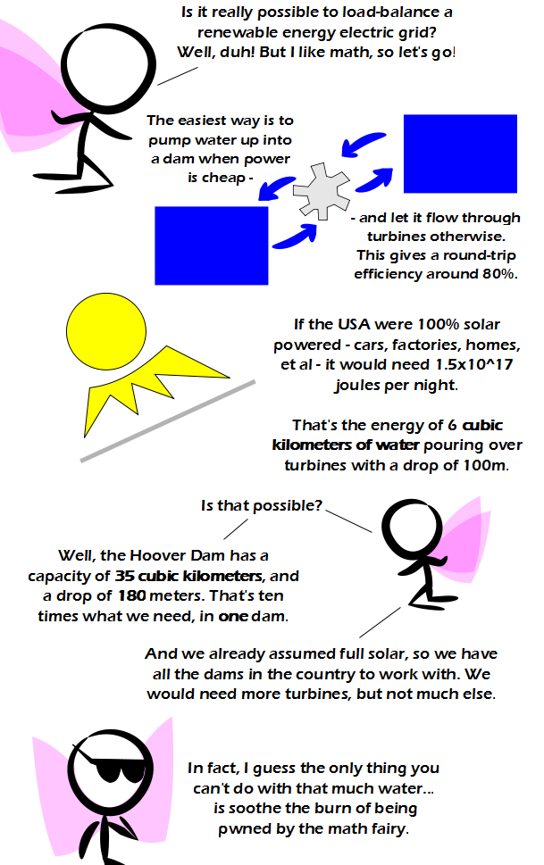

Comic JK 766
When I Feel Like It
⇤
<
?
>
⇥

⇤
<
?
>
⇥
Forum
.
RSS
.
Digg
.
Facebook
.
Reddit
.
Twitter
.
Stumbleupon
Enter your thoughts on number 766 here. Please, no spamming, trolling, or load-balancing comments Great, except power transmission is not very efficient, try maybe around 5% on a good day. Sorry, the solution isn't so easy as you thought it was. Maybe if you studied instead of making cartoons, you would know how power is transformed and distributed through the country. But I like the cheeky attempt at a burn anyway, good show. Some women, like your mother, are measured on an unimaginably huge scale. Others, like your hot sister, are not. Well you never mentioned cost... I doubt that u can buy those turbines at Walmart. Also you "assumed full solar". By the time that happens we might be on another planet! >Well this is what we call a thought experiment. You perform such an experiment in order to clear the air of certain misconceptions. >I doubt you'd need to buy those turbines at Walmart; more likely they'd be installed at the dam - i.e., where the water and power generation are. >>they would need to be built though: they don't appear by magic... and nor do the large number of solar panels or other solar converters needed in this scenario... >>The point is that capital (and maintenance) costs would be obscene. Also, keep in mind that solar energy has 2 major problems - 1: it's diffuse, meaning you need a large area (meaning "expensive") and 2: it's inefficient, meaning you need an even larger area or solar panel research to actually make significant improvements. Furthermore, there are several engineering problems with the math fairy's Hoover Dam example. Three primary issues are that 6 cubic kilometers is an absurd amount of water and pouring that much out in one night is not probable, the need for a double-resivoir system, which currently exists nowhere and is even more site-specific than current hydro dam requirements (pumping 6 cubic km out of a river means turning the river backwards); and 3 - rapid loading/drawdown is very hard on dams (in fact, rapid drawdown is the high=stress test for earthfill dam design). And then there's the issue that cars run at night and aren't connected to the grid. Fuel cells to use hydrogen produced from the grid or an on-demand power source are the only practical methods of powering a mobile, non-grid object, like a car. (And yes, I'm saying batteries aren't practical in cars - they weigh a ton, die in less than 2 years of moderate use (and some people are extremely vehicle reliant, like truckers, for whom 6 months of battery life would be unlikely), and power engines that are high speed/low torque, which, combined with the weight of the batteries, makes a pretty pathetic vehicle unless you do a really good job. >>> The issues with straining Hoover Dam (at 10% load!) can be addressed by balancing the demand across multiple dams (as noted in the penultimate paragraph of the strip). Of course, some of the effort of pumping those six cubic kilometres could be avoided by just not dropping it through the turbines in the first place. We don't necessarily need to assume full solar - though it's convenient to cut down on how many numbers are needed for the a back-of-the-envelope calculation like this one (see strip 764, 765, and let's see if tidal power gets a mention). You've already cited fuel cells for transport use as opposed to batteries, and by weaning all those jumped-up shopping carts off of burning the raw materials for plastics manufacture we'd free up large quantities for those vehicles that really do need a lot of portable bang-per-kilogram (something I don't know: the feasibility of high-speed electric rail for long-distance freight haulage). At least until better batteries are developed. >How can we get to another planet when we can't even manage our energy expenditure on this one? >>well, you could go and ask Buzz Aldrin that question... but make sure you duck. :) >>>Technically, the moon is not another planet. >>>>well, I'd like to see you try to walk there... the other question is: where do you get 35 cubic kilometers of Water? You'd have to build some kind of Container for it, at the bottom of the damm. > And it has to be dam big! o/ >> <wince> He said 6cKm per night, not 35 (that was one particular dam's capacity). The real unanswered question is how big/expensive a solar plant has to be to pump the required cKm of water per day. Why not just make it illegal for fat people to take elevators going up, make it mandatory for them going down, and harness all the energy?? Given the number of obese Americans, it would totally power the world! > Except all that walking up stairs would make them not obese anymore. >> Which means their cars would use less fuel carrying them around! i <3 math fairy! 80% my ass. No offense, but even a most efficient electric motor hardly has that; supposing you use that in your pump, you'd have magic frictionless pipes and double-magic generator that collects 100% of the kinetic energy of falling water. >agreed. Still, I find it cool that by having a Hoover dam, even 8% would be enough (according to presented numbers); that's closer to attainable. With a county-wide superconductive grid.